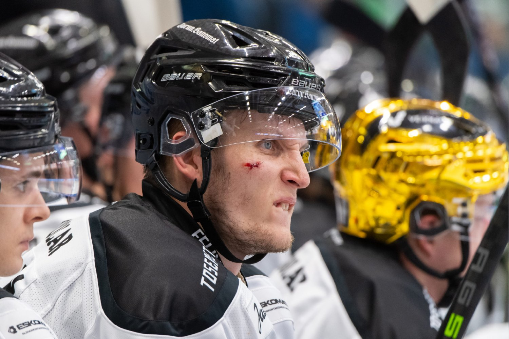
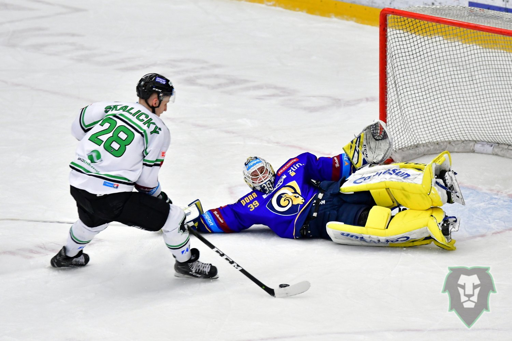

M l. B o l. – Vytáhlý slovenský útočník odcházel z Mladé Boleslavi po sezoně 2019/2020, kterou v průběhu předkola ukončila pandemie koronaviru. Ve finské soutěži nejprve hájil barvy týmu Lukko Rauma, kde si hned během první sezony vydobyl klíčovou roli a na jejím konci slavil zisk mistrovského titulu. Po dalším roku v Raumě změnil působiště, když přestoupil do Turku. Tamní TPS se však uplynulým ročníkem protrápilo a sezona mu skončila už po předkole, Skalický navíc v závěru základní části chyběl kvůli zranění. Nyní se však důrazný křídelník rozhodl ukončit svou severskou anabázi a vrací se zpět k Bruslařům.
Pavole, z Mladé Boleslavi jste odcházel po sezoně 2019/2020. Co se od té doby událo?
Byl jsem tři roky ve Finsku, kde jsem si chtěl vyzkoušet něco nového, byla to pro mě výzva. Myslím si, že už to stačilo a já se rozhodl pro návrat tam, kde se mi dařilo a kde jsem se cítil jako doma.
Byl návrat do Boleslavi jasnou volbou?
Měl jsem pár nabídek, tohle mi ale ze všech možností dávalo ten největší smysl. Už jsem tady hrál, dařilo se mi tu a bylo mi tu dobře.
Poslední sezona před odchodem pro vás z individuálního pohledu byla velmi povedená.
Ano, zažil jsem tu nejlepší sezonu v kariéře, která mě pak odrazila až do Finska. Už když jsem odcházel, tak jsem říkal, že až se budu vracet zpět, tak se určitě rád vrátím sem a bude to pro mě možnost. Proto jsem rád, že jsme se dohodli a jsem zpátky.
Kam se podle vás za dobu vaší nepřítomnosti posunula Mladá Boleslav?
Výsledky jsem víceméně celou dobu sledoval, hrálo se tu podobným stylem jako u nás ve Finsku. Boleslav se od té doby určitě posunula na vyšší úroveň, ale tento rok to bude jako od začátku. Velká část týmu se vymění a bude se to budovat znovu. Myslím si ale, že ta kostra, kluci se kterými jsem tu ještě hrával, tady pořád je a znám i některé další hráče. Myslím si, že to bude super.
 Foto: TPS TurkuVraťme se ještě k Finsku. Co vám ty tři sezony daly a jak to své působení tam hodnotíte?
Posunulo mě to určitě jako člověka i jako hráče, protože se tam hraje jiným stylem a odlišné je také trénování. Určitě mi to dalo dost a rozšířil jsem si obzory, viděl jsem jak se dělá hokej v jiné zemi a jak se tam trénuje. Trochu jsem se naučil i jazyk. (směje se)
V Lukku se vám dařilo, pak jste přestoupil do Turku. Proč ta změna?
Bylo to dobré, v závěru jsme si moc nerozuměli s trenérem, i tak jsem se tam cítil velmi dobře. Rozhodlo to, že jsem chtěl zkusit jiný tým, vizi a udělat tak nějakou změnu. Nakonec to sice nevyšlo podle mých představ, ale i o tom ten hokejový život je.
Jak probíhalo jednání s Bruslařským klubem. Byl jste osloven nebo jste vy projevil zájem o návrat?
Nejdřív volali agenti, sám jsem mluvil se Švíckem (s Martinem Ševcem, pozn. red.) a víceméně jsme začali řešit, že bych se chtěl vrátit zpátky. Asi týden na to jsme spolu volali ještě jednou a už jsme řešil, že je zájem z moji strany i ze strany Boleslavi. Pak už to bylo rychlé, jen jsme dohodovali detaily a došli jsme k dohodě, za což jsem rád.
Fanoušci si vás tu pamatují jako střelce, takže na vás asi bude trochu tlak. Počítáte s tím?
Určitě, odcházel jsem po dobré sezoně a další jsem zažil ve Finsku. Doufám, že se s tím popasuji a ukážu se v dobrém světle.
V posledních letech jste pravidelně startoval i za slovenskou reprezentaci. Máte ambice se tam vrátit?
Určitě ano, protože reprezentace je čest. Vždy, když jsem mohl přijet, tak jsem přijel. Pokud bude ta možnost, budou výkony a zavolají mi, tak neodmítnu.
Z Finska jste si přivezl zranění. Jak teď trávíte svůj čas a co vás ještě čeká?
Zatím rehabilituji, postupně poslední měsíc začínám dělat to, co můžu. Všechno jde podle plánu a já věřím, že na sezonu už budu fit.
Máte tedy individuální přípravu?
Ano, víceméně je to tak. Dohodli jsme se, že teď přípravu ještě nezačnu. Přijedu a připojím se do ní až v průběhu června.
Děkujeme za rozhovor.